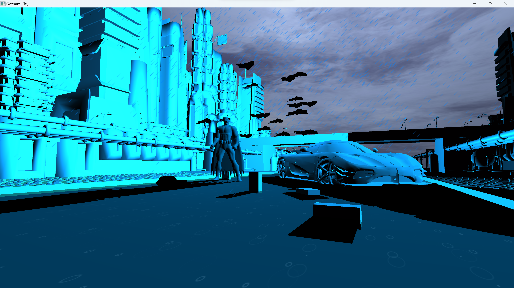

Gotham City

Gotham City is depicted as a cinematic, dark setting where Batman navigates the urban landscape alone.
The primary objective of this scene is to convey the profound sense of loneliness and melancholy experienced by Batman, despite his immense wealth, power, and array of sophisticated technology.
This project was meticulously crafted utilizing C++ and OpenGL for the CS 471 (Introduction to Graphics) course. The interactive nature of the scene allows users to freely maneuver the camera throughout the city using the WSAD keys, and trigger a cinematic sequence by pressing the G key.
Controls
W - Moves camera forward.
S - Moves camera backward.
A - Moves camera left.
D - Moves camera right.
Mouse - Mouse movement allows camera to look in all directions.
G - Triggers the cinematic animation/brings the camera back to the original starting location.
Z - Allows to see the complex mesh of the world.
Q - Moves the point light left
E - Moves the point light right
Preview of the Cinematic View
SKY Box:
It's created using two different textures that switch based on lighting conditions.
Shaders:
One of the focal points of my efforts. Working with various textures, lighting, and other tools provided ample options to create captivating effects that would otherwise be impossible.
Shadows:
Implementing shadows proved to be a bit challenging. Initially, I intended to use shadow mapping, but eventually, I opted for a skewed version of object rendering to achieve the desired shadow effect. Despite the initial difficulty, I managed to make it work seamlessly, providing realistic shadows for each object.
Embedded Video Link:
Link to video: https://youtu.be/wl4uQn8vGVE.
Rain Effect:
To achieve the rain effects, I utilized particles and crafted a custom texture specifically designed to resemble rainfall.
Raindrop Ripple Effect:
For the ripple effect, I employed a series of images mapped onto a plane. This sequence of images dynamically changes the texture on the plane frame by frame, enhancing the realism and authenticity of the rain simulation.
